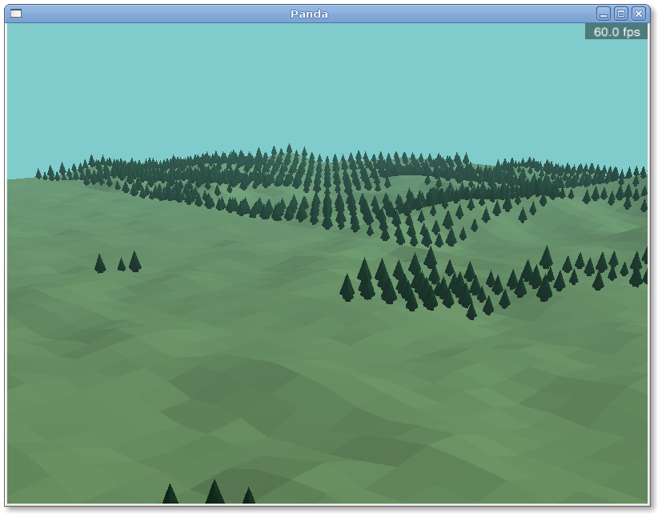

PandaSteer is an autonomous steering behaviours library for the game engine Panda3D. It gives characters in Panda3D animations and games the ability to navigate a virtual world smoothly and convincingly. For example, to get from A to B while avoiding both static and moving obstacles, to chase or evade another character, to follow a path, etc. The video playing above shows a sequence of scenes from a small demonstration of some of PandaSteer's steering behaviours.
PandaSteer is based on Craig Reynolds' GDC 1999 paper Steering Behaviours For Autonomous Characters. The 3D models included with the download are from the free set that you can download from panda3d.org.
PandaSteer also includes a simple terrain generator that I wrote in order to demonstrate PandaSteer. It uses the diamond-square algorithm to generate the terrain and Perlin noise to place the trees:

You can download this project in either zip or tar formats.
You can also clone the project with Git by running:
$ git clone git://github.com/seanh/PandaSteer
Browse the source code on GitHub : seanh/PandaSteer.
PandaSteer should work on Windows, Linux, or anywhere that Panda3D can be installed. First install Panda3D, then download PandaSteer and run pandaSteer.py for a plugin-based steering behaviours demo. Run terrain.py for a demo of the terrain generator. Run scene.py for a demo 'game' scene combining the terrain generator and steering behaviours.
PandaSteer is free software; you can redistribute it and/or modify it under the terms of the GNU General Public License as published by the Free Software Foundation; either version 2 of the License, or (at your option) any later version. PandaSteer is distributed in the hope that it will be useful, but WITHOUT ANY WARRANTY; without even the implied warranty of MERCHANTABILITY or FITNESS FOR A PARTICULAR PURPOSE. See the GNU General Public License for more details. You should have received a copy of the GNU General Public License along with PandaSteer; if not, write to the Free Software Foundation, Inc., 51 Franklin St, Fifth Floor, Boston, MA 02110-1301 USA
seanh, with contributions from Panda3D forum members ynjh_jo, Thomas_egi, pro-rsoft, drwr, cyan, mavasher, Ffeuuell, zuck and astelix.